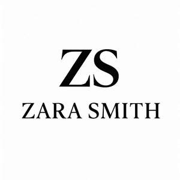

Trade Mark Journal No.2025/049 5 December 2025
UK00004299751 24 November 2025 (3,4,9,11,14,18,21,25,26,35)

- Class 3
- Cosmetics,skincare, creams , hari oils, shampoo, lotions,makeup; Conditioners for use on the hair; Gels for use on the hair; Perfume oils; Scented oils; Oils for perfumes and scents; Natural oils for perfumes; Massage oils and lotions; Ethereal oils for fragrancing; Aromatic oils for the bath; Oils for the skin; Hair oils; Massage oils; Cuticle oils; Suntan oils [cosmetics]; Bath oils; After-sun oils [cosmetics]; Shaving oils; Essential oils; Body oils; Facial oils; Shower oils; Sun-tanning oils; Tanning oils [cosmetics]; Ethereal essences and oils; Non-medicated oils; Perfumed oils for skin care; Peppermint oil [perfumery]; Mineral oils [cosmetic]; Cosmetics in the form of oils; Baby oils; Body oils [for cosmetic use]; Cosmetic sun oils; Body massage oils; Essential oils as perfume for laundry purposes; Oils for hair conditioning; Perfume oils for the manufacture of cosmetic preparations; Aromatherapy lotions; Scented oils used to produce aromas when heated; Non-medicated bath oils; Bath oils (Non-medicated -); Cosmetic oils for the epidermis.
- Class 4
- Oils for fragrancing; Oils for use as additives to heating oils; Lubricating oils being hydraulic oils; Synthetic oils; Industrial oils being quenching oils; Synthetic lubricating oils; Mineral oils; Oils for paints; Paints (Oils for -); Lubricants in the nature of oils; Non-chemical additives for oils; Additives (Non-chemical -) for oils; Leather (Preservatives for -) [oils and greases]; Preservatives for leather [oils and greases]; Anti-seize substances [oils]; Mineral lubricating oils; Hardened oils [hydrogenated oils for industrial use]; Preservatives for metals [oils]; Synthetic compressor oils; Lubricating oils and greases; Crude oils; Lamp oils; Marine oils; Non-chemical additives for engine oils; Textile oils; Light oils; Metal preservatives [oils]; Oils for lighting; Engine oils; Penetrating oils; Preservatives for cement [oils]; Preservatives (cement -) [oils]; Oils for engines; Lubricants being gear oils; Motor oils; Lubricating oils for wheels; Non-chemical additives for gearbox oils; Oils for automobiles; Base oils; Preservatives for tiles [oils]; Oils for turbines; Lubricating oils [industrial lubricants]; Heating oils containing additives; Preservatives (masonry -) [oils]; Metalworking oils; Industrial oils; Lubricating oils for petrol engines; Preservatives for concrete [oils]; Concrete preservatives [oils]; Preservatives (concrete -) [oils]; White oils; Gear oils; Industrial oils and greases, lubricants; Preservatives for brickwork [oils]; Preservatives (brickwork -) [oils]; Heavy oils; Non-chemical additives for transmission oils; Non-chemical additives for cutting oils; Oils containing water dispersant additives.
- Class 9
- Vests (Am.) Bullet-proof ; Ph meters; Three dimensional viewers; Digital pH meters; Point Of Sale [POS] systems; Volt metres; PC mice; 3D television receivers; PH electrodes; Volt meters; Step up transformers; 3D Scanners; X-Y plotters; Books recorded on disc; 3D glasses; Books recorded on tape; Bullet-proof vests (Am.); System on a Chip [SoC]; System on Chip [SOC]; Tee squares [measuring]; Engine hour meters; Measuring cups; Squares for measuring; Tablet PCs; Brackets for setting up flat screen TV sets; CB radios; Polyethylene measuring cups; PC cards; PC boards; Handheld CD players; TV sets.
- Class 11
- Economizers [Fuel -]; Cubicles [enclosures (Am.)] Shower ; Headlamps for use on cycles; Headlamps for use on motor cycles.
- Class 14
- Cubic zirconia; Silver objets d'art.
- Class 18
- Cat o' nine tails; Sports [Bags for -]; Rucksacks on castors.
- Class 21
- Nine sectioned lacquer ware serving plates (Gujeolpan); Combs for use on domestic animals.
- Class 25
- Sports [Boots for -]; Plus fours; Peaked caps.
- Class 26
- Bags [Zip fasteners for -].
- Class 35
- Sales promotions at point of purchase or sale, for others.
Zack Kutty